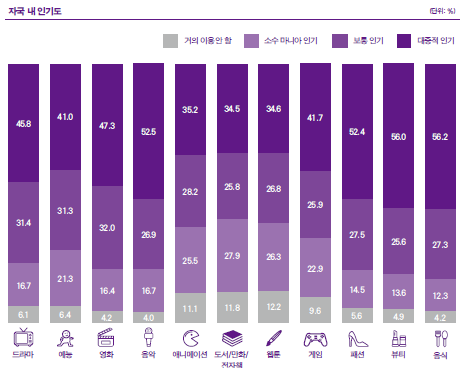
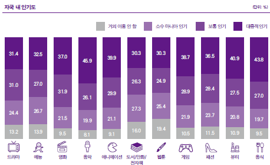
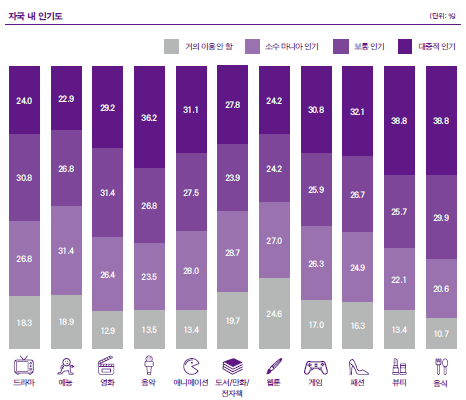
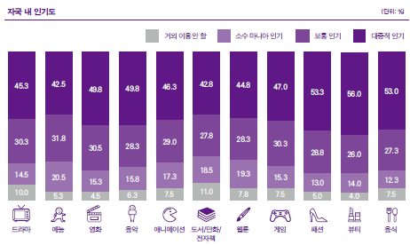
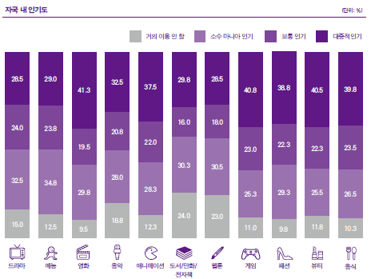

한류 콘텐츠의 인기도와 호감도
아시아·오세아니아
아시아·오세아니아 권역의 자국 내 한류콘텐츠 인기도를 측정한 결과, 전체 콘텐츠에 대한 ‘대중적 인기’ 응답률 평균은 45.2%로 5개 권역 중 중동 다음으로 높았다. 응답자들의 절반 이상은 한국 음악, 패션, 뷰티, 음식이 자국에서 대중적 인기를 얻고 있다고 인식하고 있었다. 그러나 실제 한류콘텐츠 경험자의 호감도를 살펴보면, 10가지 콘텐츠 중 한국 영화에 대한 호감도가 83.7%로 가장 높았으며, 이어 드라마, 예능 순이었다. 예능의 경우 높은 호감도에 비해 대중적 인기는 상대적으로 떨어지는 것으로 나타난 반면, 음악의 경우 호감도는 낮게 조사됐지만 대중적으로 상당한 인기를 얻고있었다.
미주
미주에서는 한류콘텐츠 중 음악(45.9%)이 가장 대중적 인기를 구가하고 있는 것으로 조사됐다. 음식(43.8%)과 뷰티(40.9%)도 40%가 넘는 응답률을 기록하며 현지에서 대중적으로 인기있는 한국 콘텐츠로 인식되고 있었다. 호감도는 음식이 80.5%로 가장 높았으며, 이어 영화, 드라마도 80%가 넘는 응답률로 높은 수치를 기록했다. 드라마는 대중적 인기도는 30% 내외로 낮은 편에 속했지만, 호감도는 80%가 넘었다. 반면 음악은 전년과 마찬가지로 대중적 인기도는 1위였지만 호감도는 전체 콘텐츠 가운데 가장 낮아 인기도와 호감도의 괴리가 매우 큰 것으로 조사됐다.
유럽
유럽은 한류콘텐츠의 대중적 인기도(30.54%)가 전년에 이어 전체 권역 중 가장 낮았다. 음식과 뷰티가 각각 38.8%의 응답률로 인기도 1위를 기록했고 이어 음악, 패션, 게임이 30%를 웃도는 응답률을 보였다. 한편 유럽의 호감도 평균도 전년에 이어 전 권역 중 가장 낮았다. 예능, 드라마, 음식, 영화는 70%대의 호감도를 보였고 나머지 콘텐츠는 60%대를 기록했다. 다른 권역과 마찬가지로 음악은 높은 대중적 인기도와 낮은 호감도를 동시에 보였다.
중동
중동은 대중적 인기도 평균 48.24%를 기록하며 전체 권역에서 한류콘텐츠가 가장 높은 인기를 보인 지역이었다. 3년 연속으로 뷰티의 인기도(56.0%)가 가장 높았고 패션과 음식이 그 뒤를 이었다. 호감도는 예능이 87.1%의 응답률로 1위를 차지했고, 드라마, 패션, 게임, 음식, 음악의 호감도도 80%를 넘는 것으로 조사됐다. 반면 뷰티와 영화는 상대적으로 높은 인기도에 비해 호감도는 낮아 재이용률 감소에 대한 우려를 낳았다.
아프리카
아프리카는 유럽 다음으로 한류콘텐츠의 인기가 낮은 지역이었다. 아프리카 응답자 중 약 35%정도만 한류콘텐츠가 대중적으로 인기 있다고 답변했다. 그러나 이는 전년 조사에 비해 10%p 증가한 수치로 현지에서 한류 확산이 이루어지고 있다고 볼 수 있다. 한류콘텐츠 중에서는 영화의 인기가 가장 높은 편이었으며, 이어 게임, 뷰티도 40% 이상의 응답률을 기록하며 아프리카에서 비교적 인기가 높았다. 반면 드라마, 예능, 웹툰은 20% 후반대의 응답률을 기록해 대중적 인기가 낮았다. 호감도는 인기도와 반대로 드라마의 응답률이 88.3%를 기록하며 1위를 차지해 인기도 결과와 큰 차이를 보였다. 드라마에 대한 높은 호감도가 낮은 인기도 상승을 견인할 수 있도록 드라마 접촉 기회 확대가 필요해 보인다.